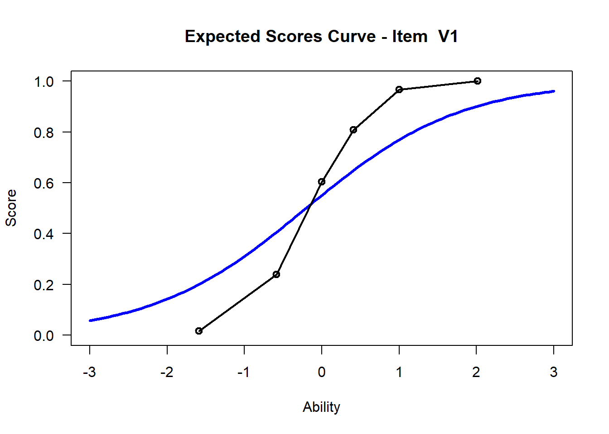

Chapter 4 The Rasch Model
4.1 Packages Necessary for running the Rasch model
Install the packages below. TAM is a collection of functions to run a variety of Rasch-type models. WrightMap will help us visualize it.
install.packages("TAM")
install.packages("WrightMap")4.2 Reading in Data
The data for this session will be downloaded from an online repository (github). We need to read it in to your R session. This means that it is something you can now work with in R. The .csv file will be read in as something called a data frame or (dataframe). This is a type of object in R that’s essentially a spreadsheet that your’re used to working with.
hls <- read.csv("hls_dic_scale.csv")4.3 See the first few rows and columns
## # A tibble: 6 x 15
## V1 V2 V3 V4 V5 V6 V7 V8 V9 V10 V11 V12 V13 V14 V15
## <dbl> <dbl> <dbl> <dbl> <dbl> <dbl> <dbl> <dbl> <dbl> <dbl> <dbl> <dbl> <dbl> <dbl> <dbl>
## 1 0 0 0 0 0 1 1 1 1 1 0 1 1 1 1
## 2 0 0 0 0 0 1 1 1 0 1 0 1 1 1 1
## 3 0 0 0 1 0 1 1 1 1 1 0 1 1 1 1
## 4 0 0 0 0 0 1 0 0 0 1 0 0 1 1 1
## 5 1 0 0 1 1 1 1 1 0 1 1 1 1 1 1
## 6 0 0 0 0 0 0 1 1 1 1 0 0 1 1 0If you want to see the whole dataset, view the data frame:
View(hls)Now we call the TAM library you installed in a prior step. This tells R to use the set of functions available in the TAM package.
4.4 The Rasch Model
- Running the Rasch model via TAM estimates the model:
\(Pr(X_i=1|\theta_s, \delta_i) = \frac{exp(\theta_s-\delta_i)}{1+exp(\theta_s-\delta_i)}\).
Here, \(\theta_s\) denotes the estimated ability level of student s, \(\delta_i\) is the estimated difficulty level of item i and both estimates are in logits. \(Pr(X=1|\theta_s, \delta_i)\) can be read as the probability of a “correct response” or of a respondent endorsing the “higher” category (if the item is scored dichotomously) for a item i given a student’s ability and item i's difficulty.
TAM will provide estimates for item difficulty and student ability along with a host of other data.
Item difficulties are defined as the point at which a person has a 50% chance of getting an item correct, defined in logits (log of the odds). So, if for an item a person of ability 0 logits has a 50% chance of getting a item correct, that item’s difficulty is defined as 0 logits.
See the figure below for a visualization of this.

4.5 Running the Rasch model
This command runs a Rasch model on the selected data frame. Here, mod1 is an object in R that “holds” the data from our Rasch model (along with a lot of other information). It’s essentially a large list. This is the main computation step, now we just select information that is stored in mod1 or run mod1 through further computation.
Note that the object hls has to contain only items and no other information.
## ------------------------------------------------------------
## TAM 3.5-19 (2020-05-05 22:45:39)
## R version 3.5.2 (2018-12-20) x86_64, mingw32 | nodename=LAPTOP-K7402PLE | login=katzd
##
## Date of Analysis: 2020-05-18 13:53:18
## Time difference of 0.03900194 secs
## Computation time: 0.03900194
##
## Multidimensional Item Response Model in TAM
##
## IRT Model: 1PL
## Call:
## tam.mml(resp = resp)
##
## ------------------------------------------------------------
## Number of iterations = 17
## Numeric integration with 21 integration points
##
## Deviance = 14687.12
## Log likelihood = -7343.56
## Number of persons = 1000
## Number of persons used = 1000
## Number of items = 15
## Number of estimated parameters = 16
## Item threshold parameters = 15
## Item slope parameters = 0
## Regression parameters = 0
## Variance/covariance parameters = 1
##
## AIC = 14719 | penalty=32 | AIC=-2*LL + 2*p
## AIC3 = 14735 | penalty=48 | AIC3=-2*LL + 3*p
## BIC = 14798 | penalty=110.52 | BIC=-2*LL + log(n)*p
## aBIC = 14747 | penalty=59.64 | aBIC=-2*LL + log((n-2)/24)*p (adjusted BIC)
## CAIC = 14814 | penalty=126.52 | CAIC=-2*LL + [log(n)+1]*p (consistent AIC)
## AICc = 14720 | penalty=32.55 | AICc=-2*LL + 2*p + 2*p*(p+1)/(n-p-1) (bias corrected AIC)
## GHP = 0.49064 | GHP=( -LL + p ) / (#Persons * #Items) (Gilula-Haberman log penalty)
##
## ------------------------------------------------------------
## EAP Reliability
## [1] 0.691
## ------------------------------------------------------------
## Covariances and Variances
## [,1]
## [1,] 1.028
## ------------------------------------------------------------
## Correlations and Standard Deviations (in the diagonal)
## [,1]
## [1,] 1.014
## ------------------------------------------------------------
## Regression Coefficients
## [,1]
## [1,] 0
## ------------------------------------------------------------
## Item Parameters -A*Xsi
## item N M xsi.item AXsi_.Cat1 B.Cat1.Dim1
## 1 V1 1000 0.182 1.793 1.793 1
## 2 V2 1000 0.074 2.936 2.936 1
## 3 V3 1000 0.175 1.848 1.848 1
## 4 V4 1000 0.164 1.938 1.938 1
## 5 V5 1000 0.280 1.139 1.139 1
## 6 V6 1000 0.566 -0.325 -0.325 1
## 7 V7 1000 0.440 0.292 0.292 1
## 8 V8 1000 0.479 0.100 0.100 1
## 9 V9 1000 0.435 0.316 0.316 1
## 10 V10 1000 0.915 -2.769 -2.769 1
## 11 V11 1000 0.123 2.317 2.317 1
## 12 V12 1000 0.760 -1.386 -1.386 1
## 13 V13 1000 0.936 -3.100 -3.100 1
## 14 V14 1000 0.612 -0.555 -0.555 1
## 15 V15 1000 0.541 -0.202 -0.202 1
##
## Item Parameters in IRT parameterization
## item alpha beta
## 1 V1 1 1.793
## 2 V2 1 2.936
## 3 V3 1 1.848
## 4 V4 1 1.938
## 5 V5 1 1.139
## 6 V6 1 -0.325
## 7 V7 1 0.292
## 8 V8 1 0.100
## 9 V9 1 0.316
## 10 V10 1 -2.769
## 11 V11 1 2.317
## 12 V12 1 -1.386
## 13 V13 1 -3.100
## 14 V14 1 -0.555
## 15 V15 1 -0.2024.6 Item Difficulties
We’ll extract difficulties (xsi) from the mod1 object (mod1 is like a large list). We’ll access this via indexing. The $ sign means, access mod1 and extract the object xsi which exists in mod1.
Assign those values to an object in the environment called diffic using <-, the assignment operator, like before
difficIn the table below, we can see the item difficulties in logits in the column xsi and the standard error for each item se.xsi. One way to think of what the standard error tells us is whether item difficulties may overlap or not.
xsi values indicate more difficult items. For instance, item Hls9 is harder than Hls8. The values are identified by constraining the mean of item difficulties to zero.
| xsi | se.xsi | |
|---|---|---|
| V1 | 1.7931307 | 0.0879607 |
| V2 | 2.9362293 | 0.1257291 |
| V3 | 1.8480436 | 0.0891891 |
| V4 | 1.9375978 | 0.0913004 |
| V5 | 1.1392412 | 0.0767937 |
| V6 | -0.3249306 | 0.0703122 |
| V7 | 0.2917034 | 0.0702564 |
| V8 | 0.1004752 | 0.0698539 |
| V9 | 0.3164109 | 0.0703361 |
| V10 | -2.7690071 | 0.1183709 |
| V11 | 2.3171095 | 0.1018562 |
| V12 | -1.3863076 | 0.0801577 |
| V13 | -3.1003020 | 0.1338193 |
| V14 | -0.5553981 | 0.0713517 |
| V15 | -0.2019536 | 0.0699871 |
4.7 Visualize
We may want to visualize each item characteristic curve (ICC) for each item. These plots plot the expected value (blue, smooth line) given that the data fits the Rasch model, and the observed black line (a binned solution). Each plot represents a single item. They visualize the probability of a respondent getting the item correct given their ability level. For instance, for item V1, the blue line shows that a person at 1 logit (x-axis) has something like a 30% probability of getting the item correct (predicted). Get Item Characteristic Curves
## Iteration in WLE/MLE estimation 1 | Maximal change 1.2824
## Iteration in WLE/MLE estimation 2 | Maximal change 0.2808
## Iteration in WLE/MLE estimation 3 | Maximal change 0.01
## Iteration in WLE/MLE estimation 4 | Maximal change 0.0012
## Iteration in WLE/MLE estimation 5 | Maximal change 1e-04
## Iteration in WLE/MLE estimation 6 | Maximal change 0
## ----
## WLE Reliability= 0.666


## ....................................................
## Plots exported in png format into folder:
## C:/Users/katzd/Desktop/Rprojects/Rasch_BIOME/PlotsNote that for items V1 and V2, the black line, the observed probabilities, deviate quite a lot from the blue lines, the expected probabilities. Contrast this with item V5. For item V1, the black line seems to be steeper than the blue line, whereas for V2, the black line is quite a bit shallower. These lines hint at different types of item misfit, which we’ll introduce later. Roughly, in the shallower case, we’re not able to differentiate between respondents very easily - it probably means there is too much randomness. In the steep case, it might be too easy to differentiate - the item isn’t informative.
4.8 Summarizing the distribution of difficulties
We can visualize and summarize the distribution of item difficulties below, but there will be a better way, called a Wright Map, that we’ll introduce later.
The methods below use no packages to visualize and summarize.
# If you want to see the items as a scatter plot
plot(diffic$xsi, main="Scatter Plot of Item Difficulties", xlab="Item Number", ylab = "Difficulty in Logits", pch=9)
axis(side=1, at = c(1:15))
## [1] 0.2894695## [1] 1.7781924.8.1 Exercise:
- Which item is the hardest? The easiest?
Hint: try to use commands such as
max(),min()as well, and see how this compares to the plot.
4.9 Item Fit
Let’s find out if the data fit the model. Use the tam.fit function to compute fit statistics, then display.
## Item fit calculation based on 15 simulations
## |**********|
## |----------|View(fit$itemfit)| parameter | Outfit | Outfit_t | Outfit_p | Outfit_pholm | Infit | Infit_t | Infit_p | Infit_pholm |
|---|---|---|---|---|---|---|---|---|
| V1 | 0.6388020 | -8.1238879 | 0.0000000 | 0.0000000 | 0.8332914 | -3.4438172 | 0.0005736 | 0.0086034 |
| V2 | 3.5650284 | 16.4285879 | 0.0000000 | 0.0000000 | 1.2330542 | 2.2818995 | 0.0224953 | 0.3149338 |
| V3 | 1.0375764 | 0.6972261 | 0.4856613 | 1.0000000 | 1.0351031 | 0.6725832 | 0.5012125 | 1.0000000 |
| V4 | 0.9381931 | -1.1272402 | 0.2596410 | 1.0000000 | 0.9692738 | -0.5468828 | 0.5844592 | 1.0000000 |
| V5 | 1.0380682 | 1.0351397 | 0.3006037 | 1.0000000 | 1.0337433 | 0.9242960 | 0.3553322 | 1.0000000 |
| V6 | 0.9978116 | -0.0873572 | 0.9303876 | 1.0000000 | 1.0006512 | 0.0274816 | 0.9780756 | 1.0000000 |
| V7 | 0.9509068 | -1.8824956 | 0.0597688 | 0.7769939 | 0.9651132 | -1.3277963 | 0.1842454 | 1.0000000 |
| V8 | 0.9707081 | -1.1478423 | 0.2510337 | 1.0000000 | 0.9747175 | -0.9843880 | 0.3249248 | 1.0000000 |
| V9 | 0.9749483 | -0.9454659 | 0.3444211 | 1.0000000 | 0.9776520 | -0.8373488 | 0.4023965 | 1.0000000 |
| V10 | 1.0016383 | 0.0190476 | 0.9848031 | 1.0000000 | 1.0040901 | 0.0734994 | 0.9414088 | 1.0000000 |
| V11 | 0.9766121 | -0.3416369 | 0.7326242 | 1.0000000 | 0.9980222 | -0.0085110 | 0.9932093 | 1.0000000 |
| V12 | 1.0496531 | 1.1883366 | 0.2347008 | 1.0000000 | 1.0206799 | 0.5145835 | 0.6068441 | 1.0000000 |
| V13 | 0.8522494 | -1.4662375 | 0.1425836 | 1.0000000 | 1.0063827 | 0.0924136 | 0.9263695 | 1.0000000 |
| V14 | 0.9600876 | -1.4375323 | 0.1505668 | 1.0000000 | 0.9740967 | -0.9261135 | 0.3543870 | 1.0000000 |
| V15 | 0.9798498 | -0.7803277 | 0.4351980 | 1.0000000 | 0.9818834 | -0.6974359 | 0.4855301 | 1.0000000 |
4.9.1 Exercise:
- Look at the
Wright Mapand the histograms of person abilities (\(\theta_p\)) and item difficulties (\(\delta_i\)). Do you think this instrument is well-targeted for this sample? 2. How might it be optimized? - Relative to other items, which item fit our model the worst?
4.9.2 Optional: Understanding the model
TAM also provides some descriptive statistics.
item_prop| item | N | M | xsi.item | AXsi_.Cat1 | B.Cat1.Dim1 | |
|---|---|---|---|---|---|---|
| V1 | V1 | 1000 | 0.182 | 1.7930554 | 1.7930554 | 1 |
| V2 | V2 | 1000 | 0.074 | 2.9361446 | 2.9361446 | 1 |
| V3 | V3 | 1000 | 0.175 | 1.8479678 | 1.8479678 | 1 |
| V4 | V4 | 1000 | 0.164 | 1.9375212 | 1.9375212 | 1 |
| V5 | V5 | 1000 | 0.280 | 1.1391729 | 1.1391729 | 1 |
| V6 | V6 | 1000 | 0.566 | -0.3249806 | -0.3249806 | 1 |
| V7 | V7 | 1000 | 0.440 | 0.2916454 | 0.2916454 | 1 |
| V8 | V8 | 1000 | 0.479 | 0.1004197 | 0.1004197 | 1 |
| V9 | V9 | 1000 | 0.435 | 0.3163527 | 0.3163527 | 1 |
| V10 | V10 | 1000 | 0.915 | -2.7690302 | -2.7690302 | 1 |
| V11 | V11 | 1000 | 0.123 | 2.3170294 | 2.3170294 | 1 |
| V12 | V12 | 1000 | 0.760 | -1.3863445 | -1.3863445 | 1 |
| V13 | V13 | 1000 | 0.936 | -3.1003226 | -3.1003226 | 1 |
| V14 | V14 | 1000 | 0.612 | -0.5554452 | -0.5554452 | 1 |
| V15 | V15 | 1000 | 0.541 | -0.2020052 | -0.2020052 | 1 |
Note, the total number of people who answered an item correctly is a sufficient statistic for calculating an item’s difficulty. Said another way, the number of correct answers, or, number of people who endorse a category increases monotonically with the item difficulty (of course, this does not mean you can just replace the Rasch model with a sum score since we’re using the Rasch model to test whether summing items at all is a reasonable thing to do).
To see this, we can find the total number of people who endorsed the “agree” category for each Hls item above. The table provides the proportion who endorsed the higher category in the M column. For instance, item Hls1 had 15.77% of people endorse the “agree” category (1= agree, 0= disagree). In the N column, we see that 317 people answered the item in total.
That means that \(317*.1577\) = 50 people answering the item correctly. Note, the estimated difficulty found in the column is 2.43 logits.
# Confirm that the total number of endorsements (coded 1) is 50 for Hls1: sum down the column containing all answers to Hls1 in the raw data.
apply(hls[1], 2, sum)## V1
## 182However, we see that for item Hls5, 27% of people endorsed that item and the estimated mean item difficulty in xsi.item is 1.50 logits.
The correlation between total number of endorsements per item and the estimated item difficulty can be computed as follows.
# create a column in the item_prop object that has the total number of endorsements for each item
item_prop <- mutate(item_prop, total_endorsed =N*M)
cor(item_prop$xsi.item, item_prop$total_endorsed)## [1] -0.994751We see that the correlation between item difficulties and total endorsements per item is nearly perfect -.97. As the number of endorsements go down, the estimated difficulty of the item increase.
ggplot(item_prop, aes(x=total_endorsed, y=xsi.item)) +
geom_point() +
ylab("Estimated Item Difficulties (logits)") +
xlab("Total Number of Endorsements for an item") +
ggtitle("Relationship between estimated item difficulty and total endorsements")